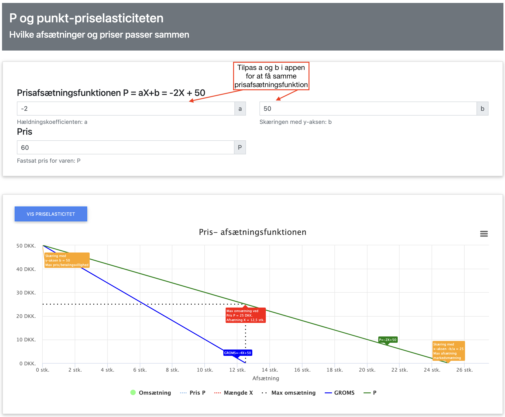
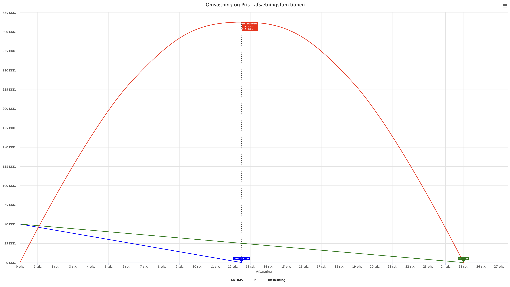

Pris, Afsætning og Omsætning

Prisen er en af de vigtigste faktorer for en virksomheds succes. I dette kapitel vil vi se på, hvordan prisen påvirker afsætningen og omsætningen.
Vi vil i dette kapitel fokusere på:
- Prisafsætningsfunktionen og dens betydning
- Forbrugerens efterspørgsel og priselasticitet
- Omsætningen
Prisens betydning for forbrugerens efterspørgsel
Prisen har en direkte indflydelse på forbrugerens efterspørgsel. Generelt gælder at:
- Jo højere pris, jo lavere efterspørgsel
- Jo lavere pris, jo højere efterspørgsel
- Dette er kendt som loven om efterspørgsel
Faktorer der påvirker efterspørgslen:
- Prisen på varen
- Forbrugerens indkomst
- Prisen på alternative varer
- Forbrugerens præferencer
- Antal potentielle købere
Prisafsætningsfunktionen
I økonomi bruger vi ofte en forenklet lineær prisafsætningsfunktion til at beskrive sammenhængen mellem pris og afsætning. Denne funktion er givet ved:
P = aX + b
hvor:
- P er prisen
- X er afsætningsmængden, nogle bøger kalder afsætningen for Q eller M.
- a er hældningskoefficienten (negativ værdi)
- b er skæringspunktet med y-aksen (maksimal pris)
- Bemærk vi har X afsætningen på X-aksen og P prisen er på Y-aksen.
Intuitivt, ville vi sige at prisen er en parameter virksomheden styrer og derved påvirker afsætningen, men historisk set har det været afsætningen på X-aksen og prisen på Y-aksen.
Eksempel på prisafsætningsfunktion:
For en isbod kunne prisafsætningsfunktionen pr. time være:
P = -2X + 50
Dette betyder at:
- Den maksimale pris er 50 kr. (når afsætningen X = 0) Det betyder at når prisen er 50 kr. er der ikke nogen der vil købe is, punktet (0,50) er markeret med en orange tekstboks i figuren nedenfor.
- For hver is mere der sælges, falder prisen med 2 kr.
- Ved en pris på 0 kr. vil der blive solgt 25 is, dette er den maksimale afsætning, dette kunne være begrænset af efterspørgslen, eller at virksomheden ikke kan producere flere is indenfor den time vi ser på.
- Bemærk at vi har en negativ hældning, hvilket betyder at jo højere pris jo lavere afsætning.
- I figuren nedenfor kan vi se den grønne linje, som er prisafsætningsfunktionen.
Bemærk at den er aftagende starter i (0,50) hvor ingen vil købe isen og skærer X-aksen i (25,0) ved den maksimale afsætning. - Når prisafsætningsfunktionen P er lineær som her, gælder altid at skæringen med X-aksen dvs. den maksimale afsætning kan beregnes som -b/a = -50/(-2) = 25 stk. Dette er markeret med en orange tekstboks i figuren nedenfor.
- Når prisafsætningsfunktionen P er lineær som her, gælder altid at prisen der maksimerer omsætningen er halvdelen af den maksimale pris b, dvs. b/2 = 50/2 = 25 kr. Dette er markeret med en rød tekstboks i figuren nedenfor.
Du kan selv hente appen nedenfor og prøve at ændre på parametrene a og b i prisafsætningsfunktionen:
App til prisafsætningsfunktion

Omsætning
Vi kan ud fra prisafsætningsfunktionen beregne omsætningen. Vi kan jo allerede afgøre at ved priserne 0 kr. og 50 kr. er omsætningen 0. Omsætningen er jo pris gange afsætning, dvs. 50*0 = 0 kr. og 0*25 = 0 kr. Vi kan bestemme alle mulige omsætninger ved at indsætte forskellige priser i prisafsætningsfunktionen, og gange med den tilsvarende pris.Men det er nemmere at gange prisafsætningsfunktionen med X, dvs. P*X.
Omsætning = P*X = (-2X + 50)*X = -2X2 + 50X
Omsætningen den røde kurve, ses også i appen sammen med prisafsætningsfunktionen den grønne kurve:
Omsætningen er altid et 2. gradspolynomium, når prisafsætningsfunktionen er lineær.
Omsætningen er maksimal i toppunktet, som ses i figuren nedenfor, markeret med en rød tekstboks, den maksimale omsætning opnås når afsætningen er 12.5 stk. og prisen er 25 kr. dvs. omsætningen er 12.5*25 = 312.5 kr.

Grænseomsætning
Ligesom vi tidligere så på grænseomkostningen, kan vi også se på grænseomsætningen. Grænseomsætningen er den ændring i omsætningen, når afsætningen ændres med 1 enhed.
Grænseomsætningen er den afledte af omsætningen, dvs.
Omsætning' = (-2X2 + 50X)' = 2·-2X2-1 + 1·50X1-1 = -4X + 50
Bemærk grænseomsætningen ligner prisafsætningsfunktionen, den har blot den dobbelte hældning 2·(-2) = -4 af prisafsætningsfunktionen.
Hver gang vi har en lineær prisafsætningsfunktion, har vi også en lineær grænseomsætning.